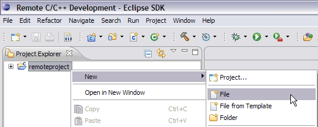
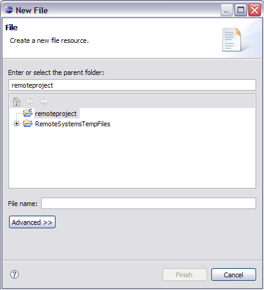
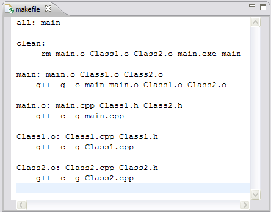

Creating your makefile
For the purpose of this tutorial, you were instructed to create a Remote Makefile Project which requires you to create a makefile.
To create a makefile:
- In the Project Explorer view, right-click a project, and select New > File.

- In the File name box, type makefile.
- In the list of projects, verify that the correct project is selected.
- Click Finish.

- The editor opens. Type the gnu make instructions in the editor. Lines are
indented with tab characters, not with spaces.

- Click File >
Save.
Your new makefile, along with your C++ file are
displayed in the Project Explorer view . Your project now
contains a C++ file and makefile. You can now build your newly created project.
Related tasks
Creating a makefile